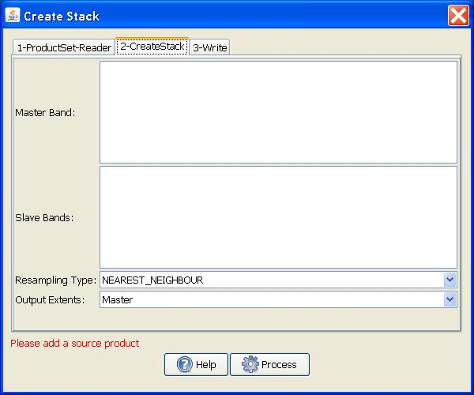

| Create Stack | |
Create Stack is a component of coregistration. The Create Stack Operator allows collocating two spatially overlapping products. Collocating two products implies that the pixel values of one product (the secondary) are resampled into the geographical raster of the other (the reference).
When two products are collocated, the band data of the secondary product is resampled into the geographical raster of the reference product. In order to establish a mapping between the samples in the reference and the secondary rasters, the geographical position of a reference sample is used to find the corresponding sample in the secondary raster. If there is no sample for a requested geographical position, the reference sample is set to the no-data value which was defined for the secondary band. The collocation algorithm requires accurate geopositioning information for both reference and secondary products. When necessary, accurate geopositioning information may be provided by ground control points. The metadata for the stack product is copied from the metadata of the reference product.

When at least one source product is a Geocoded SLC (output of GSLC-Terrain-Correction), CreateStack switches to a geocoded-stacking path that avoids any complex resampling of the carrier-bearing data — resampling a GSLC would destroy the phase needed for InSAR.
If the inputs are mixed (a geocoded reference plus one or more raw slant-range SLC secondaries), the secondaries are automatically promoted to GSLCs on the reference's grid. The promotion does three things:
gslc_output_flattened metadata stamp,
so the slave is built with the same flattening state. Mixing flattened and
non-flattened bands in the stack would otherwise yield a noise interferogram.gslc_source_slc_path stamp (or its source
SLC can be found by name in the reference's directory), the master SLC is reloaded
and cross-correlated against each slave's source SLC. The median GCP offset is
passed back to GSLC-Terrain-Correction as rangeOffsetPixels /
azimuthOffsetPixels so the slave GSLC samples the source SLC at the
bias-corrected position. This recovers sub-pixel alignment that orbit + DEM alone
cannot provide.If the cross-correlation step cannot run (the master SLC isn't reachable on disk), CreateStack falls back to pure geometric coregistration (bias = 0). The stack will still produce a recognisable interferogram, but the residual sub-pixel offset will degrade coherence.
Two parameters control this behaviour:
For GSLC inputs the operator forces Resampling Type = NONE and the
Output Extent = Reference. Other settings are ignored on that path.
For every target pixel, both the reference and the (offset-corrected) secondary are probed: if either side is no-data at the corresponding pixel, the target pixel is set to no-data. This guarantees that the intersection of the two scenes is the only region with valid data in the stack — downstream interferogram / coherence rasters then have clean no-data borders matching that intersection.